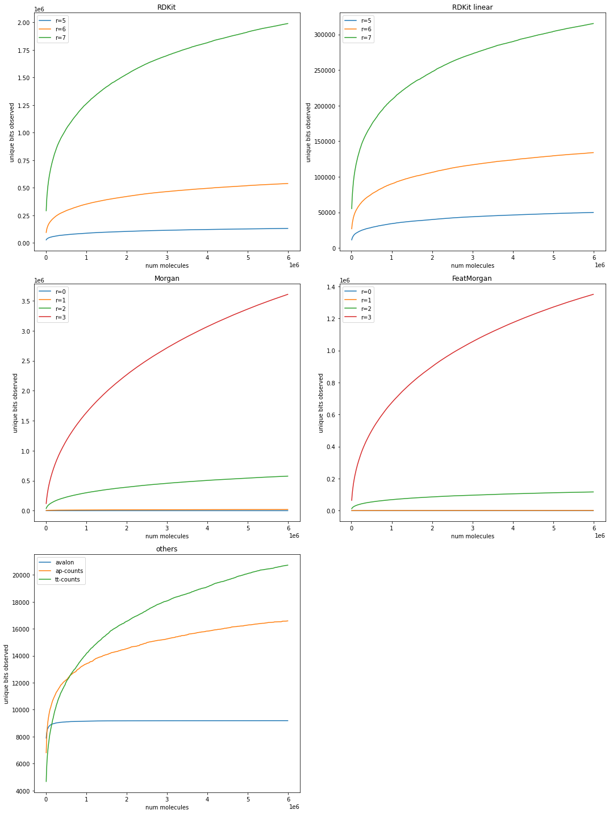
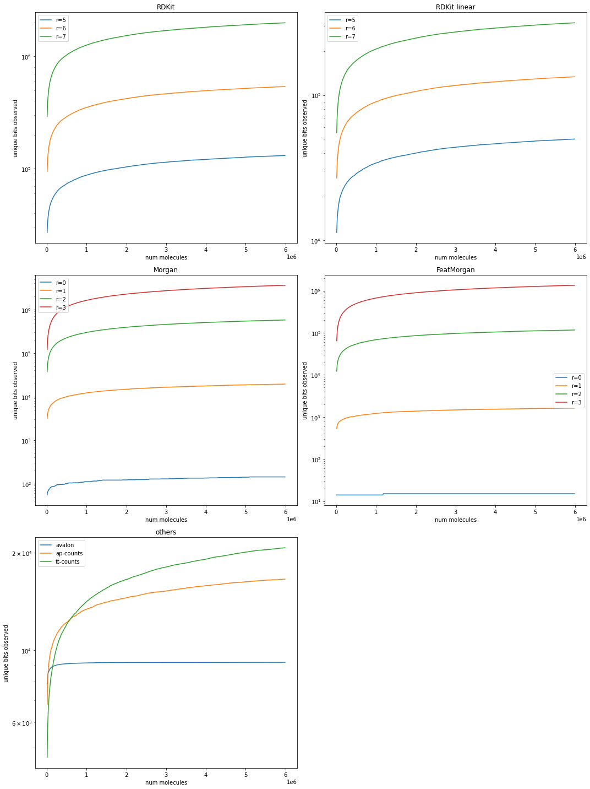

This one explores a couple of related topics: 1. If we look at a large set of organic molecules, how many different atom environments (as defined by the individual fingerprints) do we observe? 2. How quickly does this number converge with the number of compounds considered?
Obviously the answer to these questions is extremely dependent on the set of molecules you use. For this post I will use a set of around six million random molecules from Zinc20’s “in-stock” set. The six million included all have less than 50 heavy atoms after being salt stripped.
The experiment itself could hardly be simpler: read in the molecules, generate fingerprints, and keep track of the unique bits set as a function of number of molecules considered. For this analysis I limit myself to fingerprints which have not been “folded” to fit into a particular bit length (with the exception of the Avalon FP, which currently only supports generating folded forms).
The code and raw data are below, here are the curves showing the saturation behavior for the various fingerprints:
Note that the saturation behavior of the avalon fingerprint here is an artifact of the fact that the fingerprint being used was only 9192 bits long (yes, I made a typo when I entered the value in the script to generate the data); 9185 of those bits end up being set.
For a bit more resolution, here’s a table with the number of unique bits set per fingerprint in that set of 6 million, the number of new bits found in the last 100K of the 6 million, as well as how many molecules needed to be considered to reach 90, 95, and 99% of the number of unique bits:
# unique bits
# in last 100K
0.90
0.95
0.99
FeatMorgan0
15
0
N/A
N/A
N/A
FeatMorgan1
1621
2
2760000
4080000
5460000
FeatMorgan2
116975
464
4000000
4870000
5750000
FeatMorgan3
1350464
7478
4400000
5130000
5810000
Morgan0
143
0
2850000
4080000
5080000
Morgan1
19428
67
3870000
4750000
5720000
Morgan2
575817
2941
4320000
5080000
5790000
Morgan3
3606676
22970
4580000
5240000
5830000
RDKit5
131029
347
3490000
4600000
5690000
RDKit6
538500
1627
3600000
4680000
5700000
RDKit7
1989958
6897
3740000
4760000
5720000
RDKit-linear5
49852
136
3400000
4520000
5680000
RDKit-linear6
133904
402
3480000
4570000
5690000
RDKit-linear7
315293
1032
3570000
4640000
5700000
ap-counts
16585
18
2470000
3840000
5410000
avalon
9185
0
20000
70000
490000
tt-counts
20723
49
3530000
4570000
5640000
To help with the interpretation of this: a total of 131029 unique bits were found for the RDKit5 fingerprint in the set of 6 million molecules and 95% of those bits had been found after looking at 4.6 million molecules. The last 100K molecules added 347 new bits.
The thing that I find most interesting (and somewhat surprising) about these results is how far we are from having encountered “all” of the bits; new bits are being encountered for almost all of the fingerprint types even after 5.9 million molecules have been encountered. I can probably still wave my hands and estimate the order-of-magnitude number of distinct bits for each of the FP types in the full set of ~14 million substances in the ZINC20 “in-stock” set. Here’s a few of those estimates: - FeatMorgan2: 120-150K - FeatMorgan3: 1.4-1.6 million - Morgan1: 20-25K - Morgan2: 600-700K - Morgan3: 3.6-4.0 million
These are also rough lower bounds on the number of atom environments in those compounds (it’s a lower bound due to the possibility of hash collisions causing multiple atom environments to hash to the same fingerprint bit).
Aside: it’s worth mentioning that this, of course, isn’t the first time someone has looked at this topic. I don’t normally include references for blog posts, but this paper from the PubChem team is a nice look at the atom environments in the (huge) PubChem dataset: http://www.jcheminf.com/content/7/1/41
The rest of the post has the code for generating the data and doing the analysis.
Populating the interactive namespace from numpy and matplotlib
2021.09.3
Tue Jan 4 13:17:00 2022
/home/glandrum/miniconda3/envs/rdkit_blog/lib/python3.9/site-packages/IPython/core/magics/pylab.py:159: UserWarning: pylab import has clobbered these variables: ['random', 'copy']
`%matplotlib` prevents importing * from pylab and numpy
warn("pylab import has clobbered these variables: %s" % clobbered +
Loop over the molecules, strip salts, skip anything with more than 50 atoms, and build fingerprints for all the others.
The fingerprints I generate for this analysis are: - Sparse Morgan with radii 1, 2, and 3 - Sparse FeatureMorgan with radii 1, 2, and 3 - Sparse RDKit with maxPath 5, 6, and 7 - Sparse RDKit, no branches, with maxPath 5, 6, and 7 - Avalon BitVect - Sparse Atom Pairs - Sparse Topological Torsions
All of the BitVect fingerprints are 4096 bits long
import copyfrom collections import defaultdicthistoryf = gzip.open('../data/fp_bit_counts.history.pkl.gz','wb+')RDLogger.DisableLog('rdApp.info')frm = rdMolStandardize.LargestFragmentChooser()counts=defaultdict(list)accum=defaultdict(set)t1 = time.time()with gzip.open(filen,'rb') as inf: i =0 ms = []while1:try: m,nm = pickle.load(inf)exceptEOFError:breakifnot m:continue# strip salts: m = frm.choose(m)if m.GetNumHeavyAtoms()>50: continue ms.append(m) i+=1iflen(ms)>=10000:for v in0,1,2,3: k = ('Morgan',v) cnts = dview.map_sync(lambda x,v=v:set(rdMolDescriptors.GetMorganFingerprint(x,v).GetNonzeroElements().keys()), ms)for obc in cnts: accum[k].update(obc) counts[k].append((i,len(accum[k])))for v in0,1,2,3: k = ('FeatMorgan',v) cnts = dview.map_sync(lambda x,v=v:set(rdMolDescriptors.GetMorganFingerprint(x,v,useFeatures=True).GetNonzeroElements().keys()), ms)for obc in cnts: accum[k].update(obc) counts[k].append((i,len(accum[k])))for v in5,6,7: k = ('RDKit',v) cnts = dview.map_sync(lambda x,v=v:set(Chem.UnfoldedRDKFingerprintCountBased(x,maxPath=v).GetNonzeroElements().keys()), ms)for obc in cnts: accum[k].update(obc) counts[k].append((i,len(accum[k])))for v in5,6,7: k = ('RDKit-linear',v) cnts = dview.map_sync(lambda x,v=v:set(Chem.UnfoldedRDKFingerprintCountBased(x,maxPath=v,branchedPaths=False).GetNonzeroElements().keys()), ms)for obc in cnts: accum[k].update(obc) counts[k].append((i,len(accum[k]))) k = ('avalon',-1) cnts = dview.map_sync(lambda x:set(pyAvalonTools.GetAvalonFP(x,nBits=9192).GetOnBits()), ms)for obc in cnts: accum[k].update(obc) counts[k].append((i,len(accum[k]))) k = ('ap-counts',-1) cnts = dview.map_sync(lambda x:set(rdMolDescriptors.GetAtomPairFingerprint(x).GetNonzeroElements().keys()), ms)for obc in cnts: accum[k].update(obc) counts[k].append((i,len(accum[k]))) k = ('tt-counts',-1) cnts = dview.map_sync(lambda x:set(rdMolDescriptors.GetTopologicalTorsionFingerprint(x).GetNonzeroElements().keys()), ms)for obc in cnts: accum[k].update(obc) counts[k].append((i,len(accum[k]))) ms = []ifnot i%50000: t2 = time.time()print("Done %d in %.2f sec"%(i,t2-t1))ifnot i%500000: pickle.dump(dict(counts),historyf) pickle.dump(dict(accum),historyf)if i>=5500000:break
with gzip.open('../data/fp_bit_counts.history.pkl.gz','wb+') as outf: pickle.dump(dict(counts),outf) pickle.dump(dict(accum),outf)
with gzip.open('../data/fp_bit_counts.history.pkl.gz','rb') as inf: counts = pickle.load(inf)
Now plot the distributions of the number of bits set
We have a few extra data points, let’s stick to the first 6 million molecules
for k,v in counts.items(): v = [x for x in v if x[0]<6000000] counts[k] = v
morgan_ks = [x for x insorted(counts.keys()) if x[0] =='Morgan']featmorgan_ks = [x for x insorted(counts.keys()) if x[0] =='FeatMorgan']rdkit_ks = [x for x insorted(counts.keys()) if x[0] =='RDKit']rdkitlin_ks = [x for x insorted(counts.keys()) if x[0] =='RDKit-linear']figure(figsize=(15,20))pidx=1subplot(3,2,pidx)for n,r in rdkit_ks: cnts = counts[(n,r)] plot([x for x,y in cnts],[y for x,y in cnts],label=f"r={r}")_=title("RDKit")_=ylabel("unique bits observed")_=xlabel("num molecules")_=legend()pidx=2subplot(3,2,pidx)for n,r in rdkitlin_ks: cnts = counts[(n,r)] plot([x for x,y in cnts],[y for x,y in cnts],label=f"r={r}")_=title("RDKit linear")_=ylabel("unique bits observed")_=xlabel("num molecules")_=legend()pidx=3subplot(3,2,pidx)for n,r in morgan_ks: cnts = counts[(n,r)] plot([x for x,y in cnts],[y for x,y in cnts],label=f"r={r}")_=title("Morgan")_=ylabel("unique bits observed")_=xlabel("num molecules")_=legend()pidx=4subplot(3,2,pidx)for n,r in featmorgan_ks: cnts = counts[(n,r)] plot([x for x,y in cnts],[y for x,y in cnts],label=f"r={r}")_=title("FeatMorgan")_=ylabel("unique bits observed")_=xlabel("num molecules")_=legend()pidx+=1subplot(3,2,pidx)for k in counts.keys():if k[0].startswith('Morgan') or k[0].startswith('FeatMorgan') or k[0].startswith('RDKit'):continue pidx+=1 cnts = counts[k] plot([x for x,y in cnts],[y for x,y in cnts],label=k[0])_=title('others')_=ylabel("unique bits observed")_=xlabel("num molecules")_=legend()tight_layout();

Mabye better to plot those on a log scale?
morgan_ks = [x for x insorted(counts.keys()) if x[0] =='Morgan']featmorgan_ks = [x for x insorted(counts.keys()) if x[0] =='FeatMorgan']rdkit_ks = [x for x insorted(counts.keys()) if x[0] =='RDKit']rdkitlin_ks = [x for x insorted(counts.keys()) if x[0] =='RDKit-linear']figure(figsize=(15,20))pidx=1subplot(3,2,pidx)for n,r in rdkit_ks: cnts = counts[(n,r)] plot([x for x,y in cnts],[y for x,y in cnts],label=f"r={r}")_=title("RDKit")_=ylabel("unique bits observed")_=xlabel("num molecules")_=yscale('log')_=legend()pidx=2subplot(3,2,pidx)for n,r in rdkitlin_ks: cnts = counts[(n,r)] plot([x for x,y in cnts],[y for x,y in cnts],label=f"r={r}")_=title("RDKit linear")_=ylabel("unique bits observed")_=xlabel("num molecules")_=yscale('log')_=legend()pidx=3subplot(3,2,pidx)for n,r in morgan_ks: cnts = counts[(n,r)] plot([x for x,y in cnts],[y for x,y in cnts],label=f"r={r}")_=title("Morgan")_=ylabel("unique bits observed")_=xlabel("num molecules")_=yscale('log')_=legend()pidx=4subplot(3,2,pidx)for n,r in featmorgan_ks: cnts = counts[(n,r)] plot([x for x,y in cnts],[y for x,y in cnts],label=f"r={r}")_=title("FeatMorgan")_=ylabel("unique bits observed")_=xlabel("num molecules")_=yscale('log')_=legend()pidx+=1subplot(3,2,pidx)for k in counts.keys():if k[0].startswith('Morgan') or k[0].startswith('FeatMorgan') or k[0].startswith('RDKit'):continue pidx+=1 cnts = counts[k] plot([x for x,y in cnts],[y for x,y in cnts],label=k[0])_=title('others')_=ylabel("unique bits observed")_=yscale('log')_=xlabel("num molecules")_=legend()tight_layout();

Notes: - FeatMorgan with r=0 is super boring since there are only 15 types observed and 14 of them appear within the first 10K compounds (the last appears after around 1.2 million compounds). By way of comparison, there are 143 different Morgan0 types observed and the last of those doesn’t show up until after about 5.1 million compounds. - The Avalon fingerprint was 9192 bits long and it ends up setting all essentially of those bits (9185). It probably would have been better to run this with a longer fingerprint.
How many compounds do we need to look at in order to see particular fractions of the total number of bits there?
bins = (0.9,0.95,0.99)print('|',' '*15,'|','# unique bits','|','# in last 100K','|',' | '.join(f'{x:7.2f}'for x in bins),'|')print('|','-'*15,'|','-'*13,'|','-'*14,'|',' | '.join('-'*7for x in bins),'|')for k,cnts insorted(counts.items()): label =''.join(str(x) for x in k if x!=-1) maxv = cnts[-1][1] last100K = cnts[-1][1] - cnts[-11][1]if label=='FeatMorgan0': accum =' | '.join([f'{"N/A":7s}']*3)else: accum = []forbinin bins:for idx inrange(len(cnts),0,-1):if cnts[idx-1][1]<bin*maxv: accum.append(cnts[idx-1][0])break accum =' | '.join(f'{x:7d}'for x in accum)print('|',f'{label:15s}','|',f'{maxv:13d}','|',f'{last100K:14d}','|',accum,'|')
What fraction of the overall number of bits appear in the last 100K compounds?
bins = (0.9,0.95,0.99)for k,cnts insorted(counts.items()): label =''.join(str(x) for x in k if x!=-1) maxv = cnts[-1][1] last100K = cnts[-1][1] - cnts[-11][1]print(label,last100K/maxv)